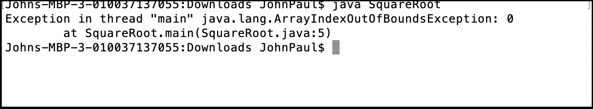
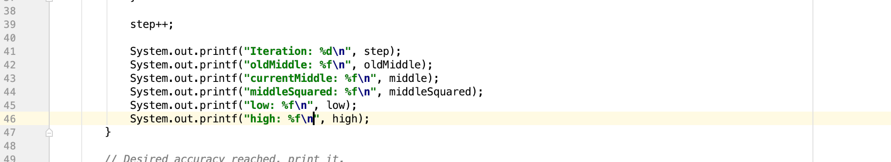
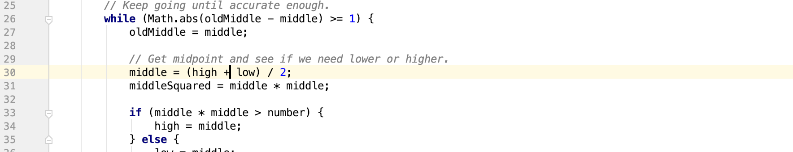
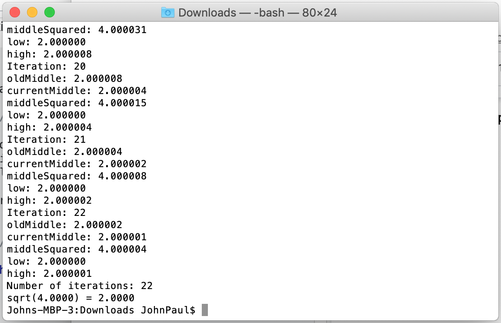

It looks like the program is crashing when we try to access args[0]. This would seem to indicate that args is an empty array. To be sure, place a temporary print statement before line 5 to see how many elements are in args:

Command Line Debugging
Debugging is a central concept and required skill of software engineering. To succeed in your classwork and your eventual career, it is essential that you gain skills in a wide variety of debugging tools. In today’s tutorial, we will show you how to use print statements to debug a simple program.
In this tutorial, we have given you a simple java program, SquareRoot.java. This program takes a positive number (either integer or double) as input and returns the square root. This particular program has some run-time errors in it; however, so it is not working properly. We will guide you through the debugging process and teach you how to use print statements to find and fix the bugs in the program.
Understanding the Algorithm
This program uses a convergence algorithm to calculate the square root. This means that at every step in the execution, the program makes a “guess” as to the correct solution based on some criteria, and then refines the guess at each step until it converges on the correct solution. It sets bounds, high and low, to restrict the range of values that the program can get.
Initially, low is set to 0 and high is set to the number we’re calculating the square root for. In each iteration, the guess that the algorithm makes for the solution is the midpoint between high and low. The middle value is then squared and compared to the value we’re solving for. If the square of the guess is greater than the number, the guess is too high, and so we set high to the current middle and continue executing. If the square of the guess is less than the number, the guess is too low, and so we set low to the current middle and continue executing. In this way, we gradually decrease the range of possible values until we have converged on a solution.
Because it may be impossible to calculate exact square roots for some values, the program runs until it has reached a specified level of precision. For this algorithm, we stop the loop and return a solution when the new guess and the old guess are the same to within the level of precision specified, indicating that we cannot improve on the guess anymore, and thus have found the correct solution. You could also stop the loop when high and low are the same within the level of precision specified.
Spend a few minutes looking over the code to gain an understanding of what it does. This is a good first step when approaching a new piece of code.
javac SquareRoot.java
The code should compile with no warnings or errors.
java SquareRoot

The program crashed immediately with an ArrayIndexOutOfBoundsException. Why didn’t the compiler catch this error? Clearly the program is not even able to run. This kind of error is what is called a run-time error, as opposed to a compile-time error. Run time errors are errors that occur when the program is running, while compile-time errors are errors with syntax. So in this case, the program is syntactically correct but logically incorrect. The compiler can only catch syntactic errors, so errors like this Exception will only be found when you run your program. Run-time errors are often more difficult to debug than compile-time errors because the compiler cannot catch them, so you as the programmer must catch them. In this case, it’s pretty easy to find the line that causes the error: SquareRoot.java:5 (line 5 of the SquareRoot.java file).
It looks like the program is crashing when we try to access args[0]. This would seem to indicate that args is an empty array. To be sure, place a temporary print statement before line 5 to see how many elements are in args:

Sure enough, there aren’t any elements in args. Why is this? It turns out args is empty because we didn’t run the program with any command line arguments. SquareRoot.java expects one command line argument, a number to perform a square root on. Since we ran the program with the command java SquareRoot.java, no number was provided and the program crashed. To prevent this error from occurring in the future, we need to only allow the program to run if it is given at least one command line argument.

This will print out a short statement outlining the correct way to run the program and then exit. Compile and run the program again. You should see the usage statement printed to the console:

Run the program with java SquareRoot 4

Now we’re getting a different error—an IllegalFormatConversionException. It’s a little difficult to tell what’s going on, except that the error is at line 46.

Looks like the print formatter is complaining about the %.4f that we used to print out the variable number and middle. %f is used to print out floating-point numbers, but it’s complaining about one of the arguments being an integer. How were number and middle defined?
middle is defined on line 16 as a double…

But number is defined on line 13 as an int! This is clearly a mistake, as we had intended our program to be able to calculate square roots on decimal numbers as well. Changing the definition of number from int to double will fix this error. Don’t forget to change Integer.parseInt to Double.parseDouble:

This error showcases one important principle of debugging: sometimes the location of the error is different from the line displayed in the error message. This error occurred on line 13, when the variable number was improperly declared to be an int, but it wasn’t caught until line 46, when we attempted to print out an int as a double. Often when debugging a program you will find that the location of an error is different from the location of its effects. Understanding this is key to being able to debug complex errors.

No exceptions this time, and the program calculated the square root! It’s a little too early for celebration, however, as the program has calculated the square root of 4 to be 1.25. This is very clearly wrong, so we have an error in our algorithm somewhere. There’s another interesting error displayed here: the number of iterations is 0. To understand why this is an error, we need to understand a little about what the program is doing.
This program calculates the square root by first making a “guess” to what the square root is, and then looping and performing calculations to improve this guess. It continues looping until the guess is accurate enough and then returns the solution. Even if the initial guess were correct, it would have to iterate at least once. For the number of iterations to be zero, either we would have to be skipping over the iterations entirely or not keeping track of how many times we’ve looped.

This print statement prints out the value of step, so we can see if it is being counted correctly. It also allows us to see if the loop is being executed, since it will not be printed if the loop is never entered.

Now we can see that the loop is being executed, since the print statement printed twice. We can also see that the number of steps is being updated, but is being reset each time the loop iterates. Close inspection of the while loop shows that we are actually defining the step variable at the beginning of each iteration.

Clearly a local variable will not work to keep track of number of iterations, since step will be created at the beginning of each iteration and then go out of scope at the end of each iteration. To keep track of the number of iterations, we will need a variable that is available for the whole duration of the loop, or in other words one defined before the loop.
This brings up another question: if step goes out of scope when the while loop terminates, how are we able to print out its value? If we go to the print statement at the bottom:

We see that the variable being printed is called steps. This is not the same variable that is used in the loop—it is declared on line 17, set to 0, and then never used again until this print statement!
Here we found two errors—we were trying to keep track of information with a variable that would go out of scope, and we were using a completely different variable to print out the number of iterations. Having two different instances of a variable designed to do the same thing is a very common error, especially when multiple people are collaborating on a file separately.


The square root is still being calculated incorrectly though. We know the loop is iterating, but we don’t know if it’s iterating enough times or if it’s performing the correct calculations. We can find out by printing out the values of different variables of interest during each loop iteration.


Let’s take a look at the output. It looks like the middle calculations are working: first oldMiddle is 4 while middle is set to 1, and then oldMiddle is 1 in the next iteration while middle is updated to 1.25. The low and high variables seem reasonable too—there’s no reason yet to doubt them.
We can see immediately though that there is a problem with the algorithm. middleSquared is supposed to be the square of middle, but it has the incorrect value. In the first iteration, middleSquared should be 1, but it is 2. In the second iteration, middleSquared should be 1.5625, but it is 2.5.

middleSquared is set on line 31. But instead of squaring middle to get middleSquared, the program multiplies middle by 2. This will definitely mess up our algorithm. Change line 26 to read middleSquared = middle * middle;

Now middleSquared is being calculated properly, but the square root is still wrong. In fact, it is giving the same value as before. Clearly there are still some errors left in the algorithm. Which variables should we look at?
middleSquared is being calculated correctly, and high and low still seem reasonable, so that just leaves oldMiddle and middle. oldMiddle is just set to middle at the beginning of each loop, so it doesn’t seem like there is much that could go wrong there unless the calculation of middle is being done incorrectly. middle seems to be the most likely candidate for errors, so let’s take a closer look at it.

middle is calculated on line 30 as (high + low) / 4. Hmm, this doesn’t seem like the right way to calculate midpoint. This will give a value that is one quarter the value of the sum of low and high, not a value halfway in between them. The formula for midpoint is (high + low) / 2, so let’s correct the code to accurately reflect the calculation of midpoint:


Now we’re getting somewhere! The algorithm now iterated 3 times instead of only 2. The value is still not correct, but 2.5 is closer to 2 than 1.25, so it seems like we’re moving in the right direction. high is now decreasing as well, which is a good sign.
Now middle, oldMiddle, and middleSquared should all be calculated correctly, but the program is still returning the wrong value. Could high and low be calculated incorrectly? If we go to the lines where high and low are calculated:

It looks to be correct. We want to decrease the high end of the estimate as long as the square of the estimate is greater than the initial number, and we want to increase the low estimate otherwise. This code is functioning correctly, so where could the error be?
If we look at the calculations that are being made at each step, and how the value of middle changes with each iteration, 3 iterations doesn’t seem like enough to perform the calculations correctly. Perhaps there’s something wrong with the loop conditions.
Let’s take a look at those conditions:

Looks like we are continuing to iterate as long as the difference between middle and oldMiddle is greater than or equal to 1. That doesn’t seem quite right. This will only calculate a square root to within one whole number! We really want our square root function to be accurate to several decimal places. Let’s change the comparison condition to 0.000001 instead of 1 and see what happens:


Success! The program is now looping 22 times, which is much more like what we would expect to see. We’re also now getting the correct answer for the square root! But it’s a little too early to celebrate yet. The program correctly calculates the square root of 4, but it might not correctly calculate other values. Let’s run it on a few other values to see if it is correctly calculating them. To simplify the output a bit, let’s comment out our print statements:


If you put all of those values into your calculator, they are all correct to 4 decimal places. It looks like we’ve fixed all of the bugs in our square root program!
To receive credit for today’s lab class, turn in a copy of your SquareRoot.java file to LearningSuite. Make sure the file contains all of the changes made to it and includes all of the debugging print statements.